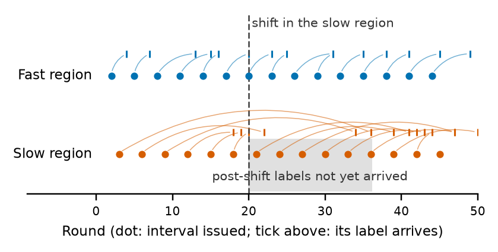
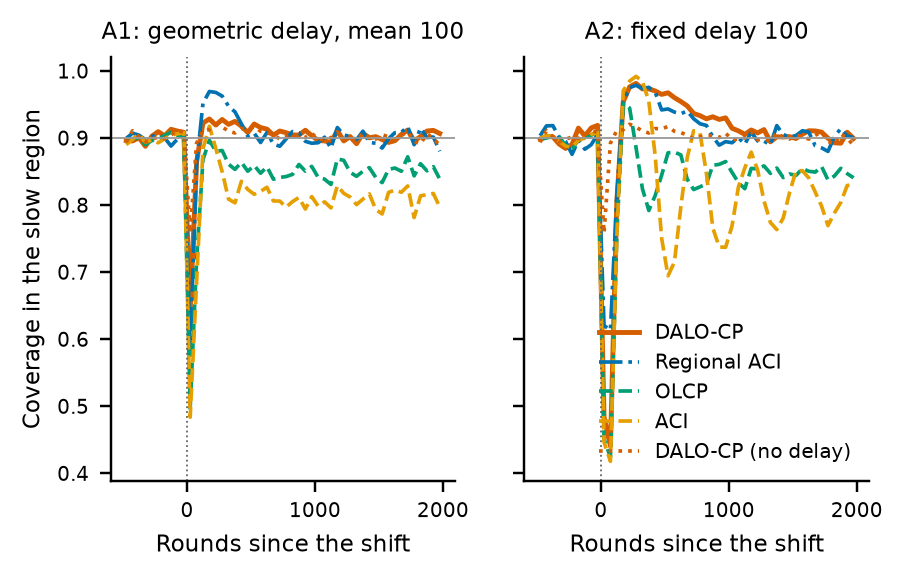
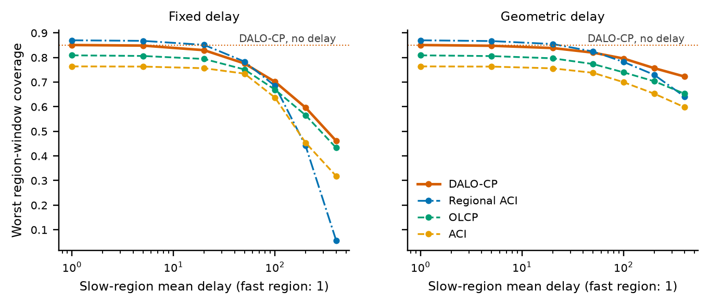
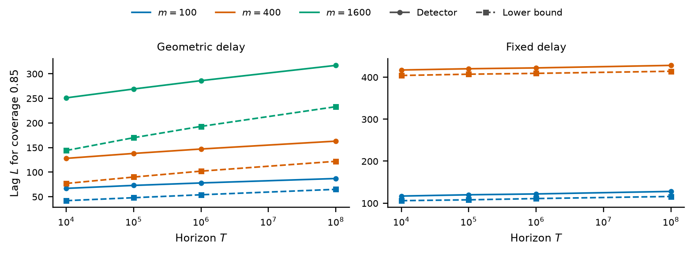
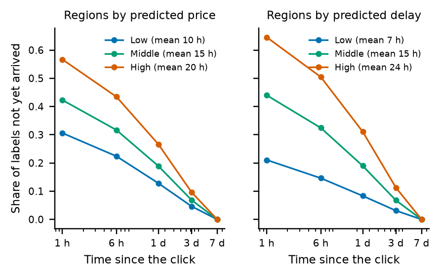
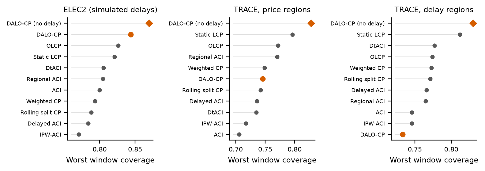

For reviewers · manuscript not yet peer reviewed
Prediction intervals adapt by seeing their own errors. If the labels of some inputs arrive late, a method can look fine overall while a slow region has shifted and stays badly under-covered.

This page supports review of the article How Much Coverage Is Possible After a Shift When Labels Arrive Late? Limits and a Case Study in Local Conformal Prediction. The manuscript itself is not posted here. To review it, please ask the corresponding author, Mohammad Malekpouri.
Most useful to check:
An explicit limit for any threshold methodOn a Gaussian two-point instance, the label information available after a shift is an explicit functional of the delay law, including delay that depends on the input.
Robustness on 13 designs, specified in advanceDALO-CP's largest regret was 0.006, against 0.053 for the best baseline family. Fresh seeds and designs not used for tuning, though we also wrote those designs.
Clear superiority over the baselinesWe required a gain of at least 0.03. Gains were at most +0.018. On ELEC2, intervals were also about 20% wider.
Real delays on TRACERegret of 0.050 and 0.079, last of ten method families on one partition. An exploratory rerun shows strong age weighting hurts under such skewed delay, but no variant reached the best baseline. Delay itself did cost real coverage, which is why the problem matters.
We do not recommend DALO-CP under strongly skewed real delays without further work. The limits are the firmer result.
A region shifts, and its labels are slow. Until post-shift labels arrive, no method has evidence of the change. Global methods then keep overall coverage near target by over-covering other regions, and the slow region stays low.


With a shift in region r at round t₀, the information in labels that have arrived by lag L is
where F_r is the delay law of the region. Any threshold method then satisfies
This gives a blind period under fixed delay, and a width that must be paid even when nothing has shifted. These ideas have earlier forms in bandit regret and change detection. What we add is the statement for coverage, with the delay law explicit.
With an unknown change time, a constraint on the whole stream adds a logarithmic cost in the horizon, and a near-matching detector shows how close that bound is on our example. A per-round width allowance does not force it.

On TRACE, delay clearly differs across input regions. Delay is also linked to the label given the input, so TRACE lies outside the theorems above and these results neither confirm nor refute them.


git clone https://github.com/malekpouri/dalo-cp
cd dalo-cp
make env && make build
make test
make smoke # about a minuteEvery experiment is a config file, with pinned dependencies and resumable runs. See how to reproduce the results.